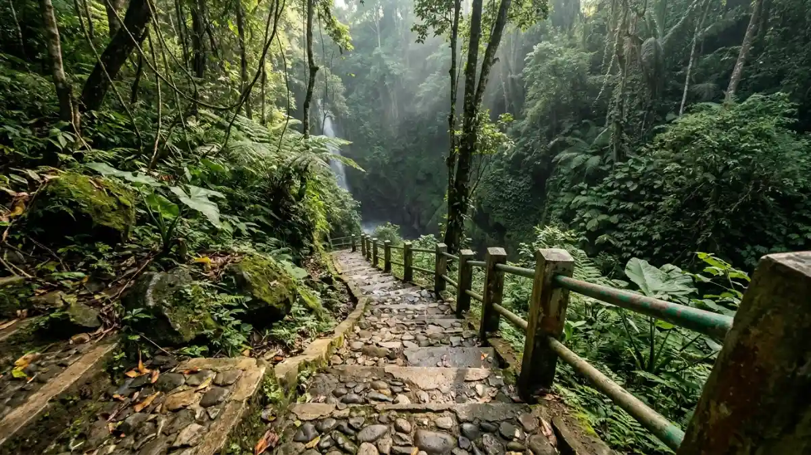

Wisata air terjun Pacet Mojokerto menawarkan kesejukan alami
pegunungan dengan keindahan tebing dan hutan asri. (Ilustrasi)
Wisata air terjun Pacet Mojokerto menawarkan kesejukan alami
pegunungan dengan keindahan tebing dan hutan asri. (Ilustrasi)
Air terjun Pacet Mojokerto adalah kumpulan wisata air terjun di Kecamatan Pacet, antara lain Coban Canggu, Grenjengan, dan Watu Lumpang, dengan tiket berkisar Rp5.000 sampai Rp15.000.
- Kawasan Pacet memiliki beberapa air terjun utama, yaitu Coban Canggu, Grenjengan, Watu Lumpang, dan Surodadu.
- Tiket masuk umumnya berada di kisaran Rp5.000 sampai Rp15.000 per orang, dengan jam buka sekitar 08.00 sampai 16.00 WIB.
- Wana Wisata Padusan tercatat menerima 304.964 wisatawan nusantara pada 2022, sehingga akhir pekan cenderung ramai.
- Datang pagi pada hari kerja memberi suasana paling tenang dan lebih aman dari hujan sore.
- Harga dan jam buka dapat berubah, jadi cek informasi resmi sebelum berangkat.
DAFTAR ISI
- 1. Apa Itu Air Terjun Pacet Mojokerto?
- 2. Seberapa Populer Wisata Air Terjun Pacet?
- 3. Apa Saja Air Terjun yang Ada di Pacet Mojokerto?
- 4. Berapa Harga Tiket dan Jam Buka Air Terjun Pacet?
- 5. Bagaimana Cara Menuju Air Terjun Pacet Mojokerto?
- 6. Kapan Waktu Terbaik Mengunjungi Air Terjun Pacet?
- 7. Apa Saja Fasilitas dan Aktivitas yang Bisa Dinikmati?
- 8. Apa Kesalahan Umum Saat Berkunjung ke Air Terjun Pacet?
- 9. Air Terjun Mana yang Paling Cocok untuk Kebutuhan Anda?
- 10. Kesimpulan
- 11. FAQ
Apa Itu Air Terjun Pacet Mojokerto?
Air terjun Pacet Mojokerto adalah sebutan untuk kelompok air terjun alami di Kecamatan Pacet, Kabupaten Mojokerto, Jawa Timur, yang dikelilingi hutan dan udara pegunungan yang sejuk.
Pacet berada di dataran tinggi sehingga suhunya lebih dingin dibanding pusat Kota Mojokerto. Jaraknya sekitar 30 menit berkendara dari pusat Mojokerto dan maksimal sekitar dua jam dari Surabaya.
Kombinasi akses yang cukup mudah dan alam yang masih hijau membuat kawasan ini menjadi tujuan akhir pekan bagi keluarga, pasangan, komunitas hobi, dan pelancong yang ingin berkemah.
Istilah "air terjun Pacet" sering dipakai untuk beberapa lokasi sekaligus. Ada air terjun yang benar-benar berada di wilayah Pacet seperti Coban Canggu di Desa Padusan, Grenjengan, Watu Lumpang, dan Surodadu di Desa Claket.
Ada juga air terjun yang letaknya tepat di perbatasan, misalnya Dlundung di Desa Ketapanrame, Trawas, yang kerap masuk dalam daftar wisata Pacet karena jaraknya berdekatan.
Seberapa Populer Wisata Air Terjun Pacet?
Wisata alam Pacet termasuk yang paling banyak dikunjungi di Kabupaten Mojokerto. Wana Wisata Padusan tercatat menerima 304.964 wisatawan nusantara pada 2022, menurut data kunjungan objek wisata Kabupaten Mojokerto.
Data Badan Pusat Statistik Kabupaten Mojokerto mencatat 1.360.423 wisatawan domestik di kabupaten ini pada 2022. Artinya, kawasan Padusan saja menyumbang bagian yang cukup besar dari seluruh kunjungan.
Publikasi terbaru, yaitu Statistik Pariwisata Kabupaten Mojokerto 2024, dirilis BPS pada 24 Oktober 2025.
Angka kunjungan tahun berjalan biasanya baru tersedia setelah rilis tahunan, sehingga pembaca perlu memakai data tersebut sebagai gambaran tren, bukan jumlah pasti untuk 2026.
Bagi pengunjung, angka ini berarti satu hal praktis. Pada hari libur nasional dan akhir pekan, loket, area parkir, dan jalur menuju air terjun bisa padat.
Rencanakan kunjungan pada hari kerja atau datang sebelum pukul 09.00 bila ingin suasana lebih lengang.
Apa Saja Air Terjun yang Ada di Pacet Mojokerto?
Air terjun yang paling sering dikunjungi di sekitar Pacet adalah Coban Canggu, Grenjengan, Watu Lumpang, Surodadu, dan Dlundung, masing-masing dengan karakter akses, tiket, dan suasana berbeda.
Air Terjun Coban Canggu
Coban Canggu berada di Desa Padusan, Pacet, dan menjadi air terjun paling populer di kawasan ini. Laman resmi pariwisata Kabupaten Mojokerto menyebut tebing batunya setinggi sekitar 80 meter.
Dari loket, pengunjung berjalan kaki sekitar 500 meter melewati tangga paving block, sehingga cocok untuk keluarga dengan anak. Fasilitas yang tersedia meliputi toilet, warung, musala, gazebo, dan area parkir.

Coban Canggu merupakan salah satu air terjun terpopuler di Pacet dengan ketinggian tebing mencapai 80 meter. (Ilustrasi)Air Terjun Grenjengan
Grenjengan berada di Desa Padusan dan memiliki ketinggian sekitar 40 meter. Selain menikmati air terjun dan berfoto, pengunjung dapat mencoba aktivitas luar ruang seperti berkemah dan paintball. Karena jalurnya lebih menantang, kenakan alas kaki yang kuat dan bawa air minum secukupnya.
Air Terjun Watu Lumpang
Watu Lumpang dikenal juga sebagai Coban Kembar karena memiliki dua aliran air dengan ketinggian berbeda.
Lokasinya berada di pinggir jalur Pacet menuju Cangar dengan akses yang mudah dari jalan raya. Tiket masuk yang dilaporkan media wisata sekitar Rp10.000 per orang.
Air Terjun Surodadu
Surodadu berada di Dusun Mligi, Desa Claket, dan dikenal dengan udara sejuk serta pepohonan rindang.
Tiket yang dilaporkan sekitar Rp5.000 dan jam buka sekitar 07.00 sampai 17.00 WIB. Pilihan ini cocok bila Anda ingin biaya hemat dan suasana yang lebih sepi.
Air Terjun Dlundung
Dlundung berada di Desa Ketapanrame, Trawas, di sisi utara kawasan Gunung Arjuno. Kolam alaminya yang dangkal dianggap ramah anak, dan area berkemahnya tersedia dengan tiket tambahan sekitar Rp10.000 menurut informasi Disbudporapar Kabupaten Mojokerto yang dikutip media.
Berapa Harga Tiket dan Jam Buka Air Terjun Pacet?
Tiket masuk air terjun Pacet umumnya berkisar Rp5.000 sampai Rp15.000 per orang, dengan jam buka sekitar 08.00 sampai 16.00 WIB, tetapi nilainya berbeda di setiap lokasi dan hari kunjungan.
Untuk Coban Canggu, laman resmi pariwisata Kabupaten Mojokerto mencantumkan tiket Rp10.000 dan jam operasional setiap hari pukul 08.00 sampai 16.00.
Sumber lain melaporkan tarif akhir pekan dan hari kerja yang berbeda, misalnya Rp7.000 pada hari biasa dan Rp10.000 pada hari libur. Perbedaan ini wajar karena tarif dapat disesuaikan oleh pengelola.
Pengunjung juga perlu waspada terhadap pungutan di luar tarif resmi. Sebuah liputan Mojok.co mencatat keluhan pengunjung soal tarif tidak wajar di beberapa titik, bahkan disebut mencapai Rp30.000 sampai Rp50.000 per orang.
Bila ragu, tanyakan rincian tiket di loket resmi dan minta karcis. Rincian lengkap per lokasi bisa Anda baca di panduan harga tiket air terjun Pacet Mojokerto yang kami susun terpisah.
Bagaimana Cara Menuju Air Terjun Pacet Mojokerto?
Jalur utama menuju air terjun Pacet adalah lewat jalan raya Mojokerto menuju Pacet, kemudian mengikuti petunjuk arah ke Desa Padusan, Claket, atau jalur Pacet menuju Cangar, tergantung tujuan.
Dari Kota Mojokerto, perjalanan memakan waktu sekitar 30 menit. Dari Surabaya, estimasi maksimal sekitar dua jam, bergantung kondisi lalu lintas.
Pengunjung dari Malang biasanya memilih jalur melalui Pandaan dan Trawas lalu menyambung ke Pacet, atau mengikuti navigasi digital yang menyesuaikan kondisi jalan saat itu.
Jalan menanjak dan berkelok, jadi pastikan rem dan kondisi ban kendaraan prima. Sepeda motor dan mobil keluarga umumnya bisa mencapai loket, tetapi bagian akhir menuju air terjun ditempuh dengan berjalan kaki. Panduan langkah demi langkah tersedia di artikel rute ke air terjun Pacet Mojokerto untuk berbagai titik keberangkatan.
Kapan Waktu Terbaik Mengunjungi Air Terjun Pacet?
Waktu terbaik mengunjungi air terjun Pacet adalah pagi hari pada hari kerja, terutama saat peralihan musim hujan ke kemarau, ketika debit air cukup deras tetapi jalur tidak terlalu licin.
Jam operasional yang berakhir sekitar pukul 16.00 membuat kunjungan pagi lebih efisien. Siang hingga sore di kawasan pegunungan sering berawan atau turun hujan, sehingga jalur batu dan tangga menjadi licin.
Saat musim hujan puncak, debit air bisa naik dan keruh, jadi hindari menceburkan diri ke dasar air terjun bila arus terlihat deras.
Bagi pengunjung yang menginginkan suasana lebih tenang, hari Selasa sampai Kamis umumnya lebih lengang daripada Sabtu dan Minggu. Liburan sekolah dan tanggal merah hampir selalu ramai sehingga sebaiknya datang lebih awal.
Apa Saja Fasilitas dan Aktivitas yang Bisa Dinikmati?
Fasilitas dasar di air terjun Pacet umumnya mencakup toilet, musala, warung makan, gazebo, dan area parkir, sedangkan aktivitasnya meliputi bermain air, berfoto, trekking ringan, dan berkemah.
Beberapa lokasi menyediakan kegiatan tambahan. Grenjengan, misalnya, dilaporkan menawarkan berkemah dan paintball. Dlundung menyediakan area perkemahan dengan tiket tersendiri.
Kawasan Pacet juga memiliki pemandian air panas dan taman wisata keluarga di sekitarnya, sehingga satu hari perjalanan bisa menggabungkan air terjun dan rekreasi lain.
Bagi pecinta kemah, memadukan kunjungan air terjun dengan bermalam di area perkemahan memberi pengalaman berbeda, terutama saat matahari terbit di pegunungan. Siapkan perlengkapan sesuai cuaca dan patuhi aturan pengelola setempat.
Apa Kesalahan Umum Saat Berkunjung ke Air Terjun Pacet?
Kesalahan paling umum pengunjung air terjun Pacet adalah datang terlambat, memakai alas kaki licin, mengabaikan peringatan arus air, dan tidak menanyakan tarif resmi sebelum membayar.
Kesalahan lain adalah membawa terlalu banyak barang berharga ke area basah, membuang sampah sembarangan, dan melewati batas aman demi berfoto.
Tebing berbatu dan lumut membuat tepi air terjun mudah membuat tergelincir. Gunakan pegangan besi atau tali pengaman bila tersedia dan ikuti arahan petugas.
Persiapan sederhana mengurangi risiko tersebut. Daftar persiapan yang lebih rinci, termasuk perlengkapan dan etika wisata, dibahas dalam artikel tips berkunjung ke air terjun Pacet Mojokerto agar kunjungan Anda lebih aman dan nyaman.
Air Terjun Mana yang Paling Cocok untuk Kebutuhan Anda?
Pilihan air terjun yang tepat tergantung tujuan. Coban Canggu cocok untuk keluarga, Grenjengan untuk petualang, Watu Lumpang untuk akses cepat, Surodadu untuk anggaran hemat, dan Dlundung untuk bermain air serta berkemah.
| Lokasi | Karakter utama | Kisaran tiket yang dilaporkan | Cocok untuk |
|---|---|---|---|
| Coban Canggu | Tebing tinggi, tangga paving block | Rp7.000 sampai Rp10.000 | Keluarga dan pemula |
| Grenjengan | Ketinggian sekitar 40 meter, aktivitas luar ruang | Rp10.000 sampai Rp15.000 | Petualang dan komunitas |
| Watu Lumpang | Air terjun kembar di tepi jalan | Sekitar Rp10.000 | Kunjungan singkat |
| Surodadu | Teduh, rindang, lebih sepi | Sekitar Rp5.000 | Pelancong hemat |
| Dlundung | Kolam dangkal, area kemah | Rp10.000 sampai Rp15.000 | Anak-anak dan camping |
Seluruh angka dalam tabel adalah kisaran dari laporan media dan laman resmi, sehingga bisa berubah. Pertimbangkan juga stamina, usia anggota rombongan, dan waktu yang tersedia.
Bila ingin menggabungkan dua lokasi dalam satu hari, pilih lokasi yang berdekatan seperti Coban Canggu dan Grenjengan di Desa Padusan agar tidak banyak waktu terbuang di jalan.
Kesimpulan
Air terjun Pacet Mojokerto menawarkan pilihan lengkap, dari Coban Canggu yang ramah keluarga hingga Grenjengan yang lebih menantang. Tiket umumnya terjangkau, yaitu sekitar Rp5.000 sampai Rp15.000, dengan jam buka sekitar 08.00 sampai 16.00 WIB.
Langkah praktisnya sederhana. Pilih lokasi sesuai rombongan, datang pagi pada hari kerja, bawa pakaian ganti dan alas kaki antilicin, serta konfirmasi tarif resmi di loket.